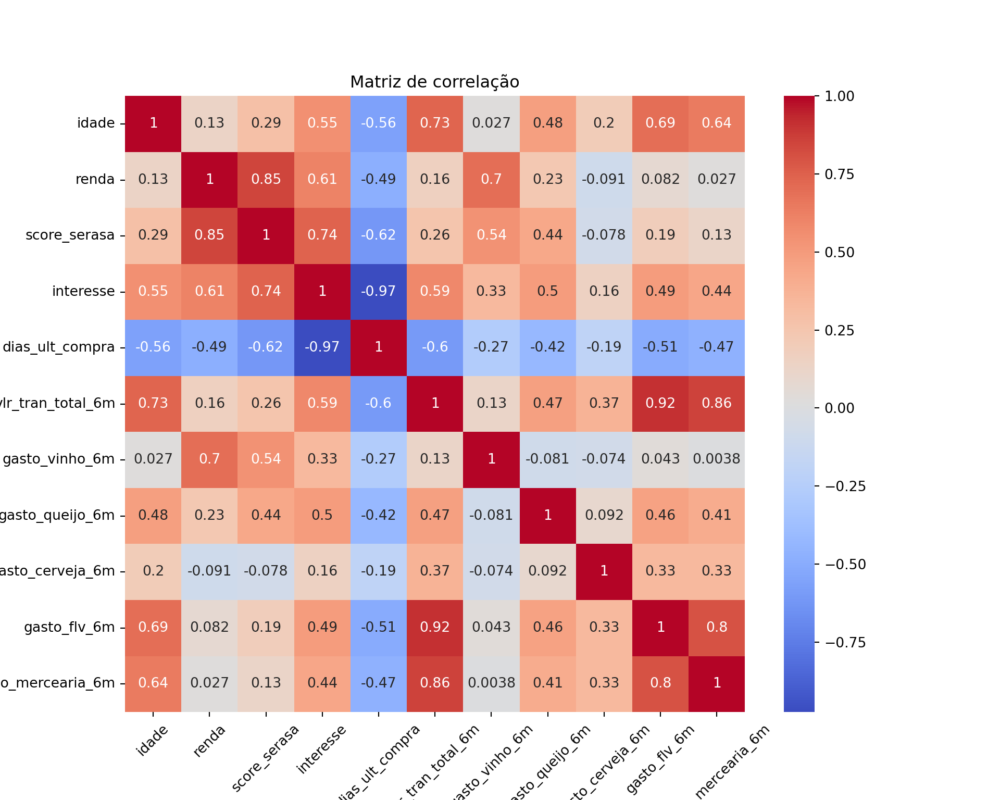
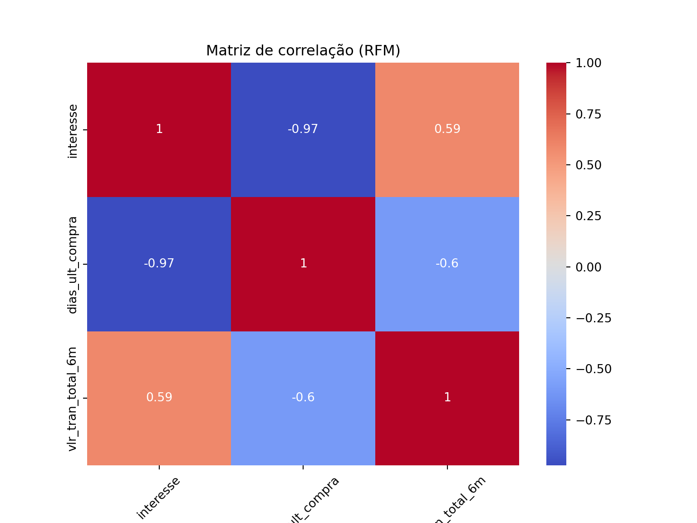
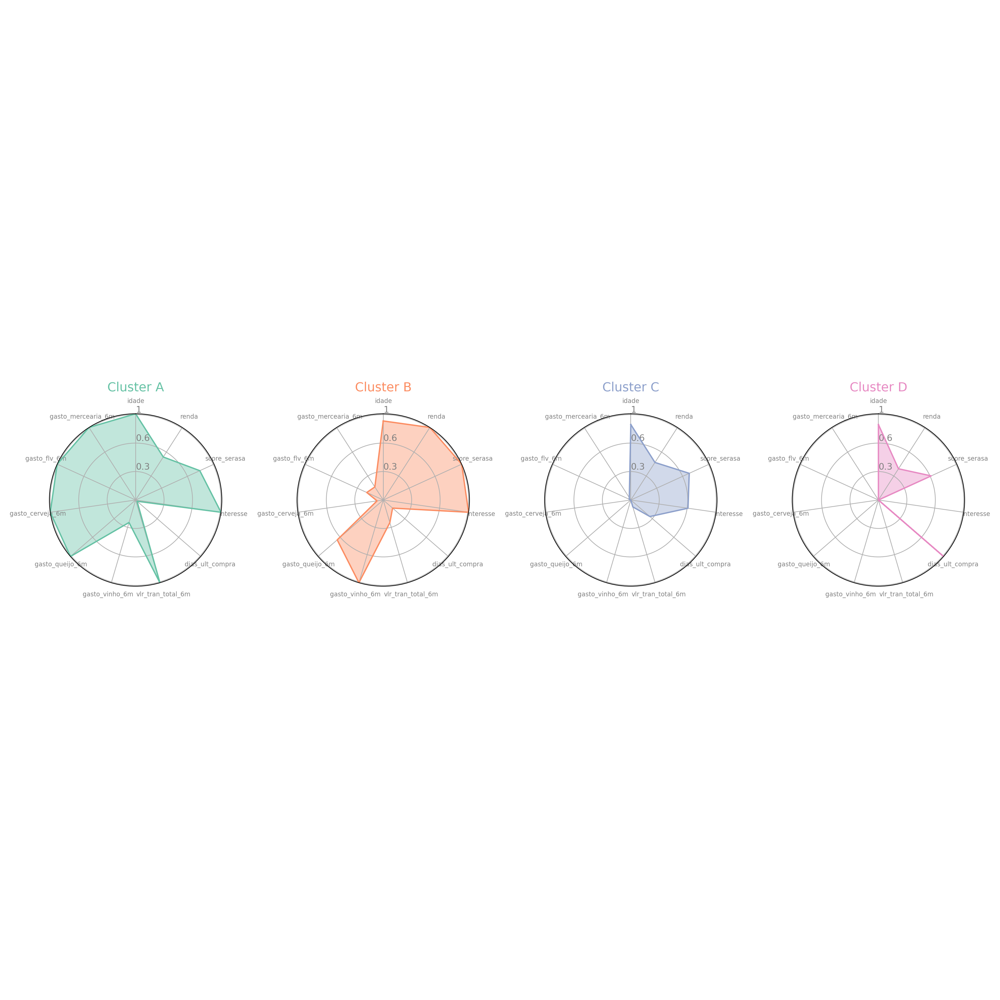
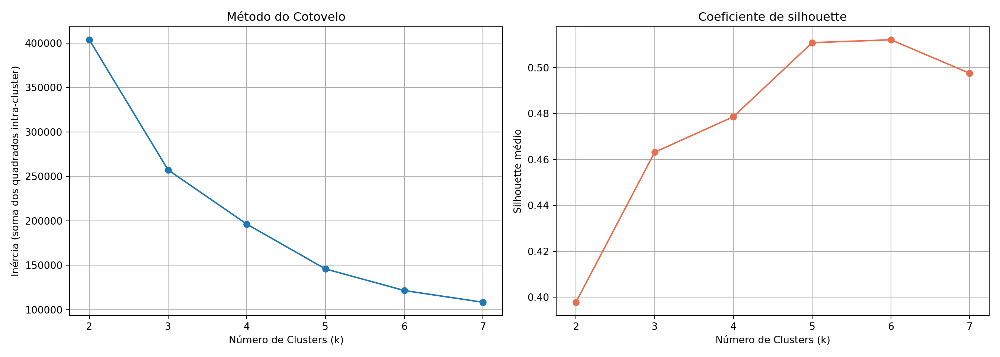
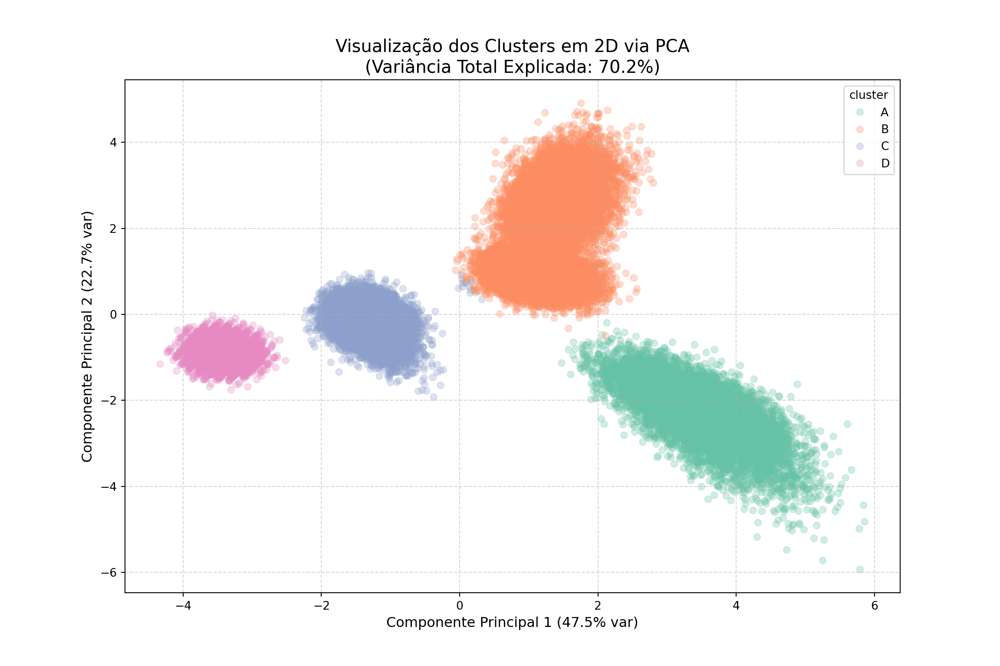

import numpy as np
import pandas as pd
from sklearn.cluster import KMeans
from sklearn.decomposition import PCA
from sklearn.metrics import silhouette_score
import seaborn as sns
import matplotlib.pyplot as plt
import warnings
warnings.filterwarnings("ignore", category=FutureWarning)6 Análise de agrupamento de clientes do mercado
No cenário atual do varejo, tratar todos os clientes de forma idêntica é uma estratégia ineficiente e dispendiosa. Cada consumidor possui hábitos de compra, preferências e frequências distintas. A Análise de Agrupamento (Clustering) surge como uma ferramenta estatística para transformar bases de dados brutas em inteligência de negócio, permitindo a identificação de padrões ocultos sem a necessidade de rótulos prévios (Aprendizado Não Supervisionado).
O objetivo deste capítulo é aplicar o algoritmo K-Means para segmentar uma base de clientes de um mercado, permitindo que o gestor de marketing responda a perguntas como:
Quem são os nossos clientes “Premium” e como retê-los?
Quais clientes estão pouco ativos e talvez precisem de uma oferta de reativação?
Como otimizar o orçamento de marketing focando nos grupos com maior potencial de retorno?
Seguimos as etapas do CRISP-DM apresentadas na introdução do livro. Todo o trabalho é feito em Python.
| Etapa do CRISP-DM | Onde aparece no capítulo |
|---|---|
| Entendimento do negócio | Esta introdução: as perguntas do gestor de marketing |
| Entendimento dos dados | Dados disponíveis e análise exploratória |
| Preparação dos dados | Padronização (Z-score) das variáveis |
| Modelagem | Algoritmo k-médias e escolha de \(k\) |
| Avaliação | Perfil dos grupos, valor de cada grupo, cotovelo, silhouette e PCA |
| Implantação | Uso prático da segmentação |
6.1 Dados disponíveis
Os dados disponíveis para esta análise contemplam 11 variáveis que podem ser agrupadas em três pilares fundamentais para a segmentação de clientes no varejo:
- Perfil Demográfico e de Crédito
Fornecem o contexto socioeconômico do cliente, fundamentais para entender o poder de compra e o risco.
idade: Idade do cliente em anos.renda: Renda mensal declarada.score_serasa: Indicador de comportamento financeiro e risco de crédito (essencial para ofertas de prazo ou cartões fidelidade).
- Comportamento de Compra (RFM)
Variáveis que capturam a Recência, Frequência e Valor (modelo RFM), o “coração” da análise de CRM.
dias_ult_compra(Recência): Quantidade de dias desde a última transação. Clientes com valores baixos são ativos; valores altos indicam menor atividade recente.
interesse(Frequência): Um proxy para a frequência de visita ao mercado.vlr_tran_total_6m(Valor): Gasto acumulado no último semestre (o “M” de monetary do RFM). Mede o valor recente do cliente, e não o seu valor de vida (LTV), que exigiria uma visão de longo prazo e da margem de lucro.
- Mix de Consumo (Categorias)
Permitem identificar as preferências e o estilo de vida do cliente (ex: o sommelier, o fã de churrasco, o focado em saúde). Todas as variáveis abaixo referem-se ao gasto acumulado nos últimos 6 meses:
gasto_vinho_6m: Consumo na categoria de vinhos e espumantes.gasto_queijo_6m: Consumo em queijos e laticínios finos.gasto_cerveja_6m: Consumo em cervejas e bebidas de malte.gasto_flv_6m: Gasto em Frutas, Legumes e Verduras (indica perfil focado em perecíveis e saudabilidade).gasto_mercearia_6m: Gasto em itens de despensa (arroz, feijão, limpeza), o núcleo do consumo doméstico.
DicaInsight de Negócio
A combinação dessas variáveis permitirá criar Personas. Por exemplo: um cliente com alto gasto_vinho_6m e alto score_serasa possui um perfil radicalmente diferente de um cliente com alto gasto_flv_6m e baixa idade. O K-Means nos ajudará a encontrar esses grupos de forma automatizada.
AvisoDados pessoais e LGPD
Usar dados demográficos e de crédito (como renda e score) para segmentar clientes e direcionar ofertas exige atenção à Lei Geral de Proteção de Dados (Lei nº 13.709/2018): é preciso ter base legal para o tratamento, informar o cliente sobre a finalidade e evitar que a segmentação leve a tratamentos discriminatórios.
A análise será feita usando Python. Começamos fazendo o carregamento das bibliotecas necessárias.
df = pd.read_csv("data/clientes_mercado.csv")
cols = list(df.columns)6.2 Análise Exploratória de Dados
Antes de aplicarmos qualquer algoritmo de agrupamento, precisamos conhecer a “matéria-prima” do nosso estudo. A análise exploratória nos ajuda a entender a dimensão dos dados, identificar valores atípicos (outliers) e observar como as variáveis de consumo se relacionam entre si.
Primeiro, verificamos o tamanho da nossa base para garantir que temos volume suficiente para uma segmentação estatisticamente relevante.
n_linhas = df.shape[0]
print(f"Número de linhas na base: {n_linhas}.")Número de linhas na base: 60000.Em seguida, visualizamos uma amostra aleatória dos dados para validar a estrutura das colunas e o formato das informações (tipos de dados e preenchimento).
df.sample(10) idade renda ... gasto_flv_6m gasto_mercearia_6m
12303 41 3678.48 ... 0.00 1.02
8596 43 5963.56 ... 60.43 34.20
8065 48 3467.92 ... 190.75 250.85
41274 40 4196.40 ... 9.47 17.77
51105 40 3590.78 ... 0.00 0.00
42751 46 7263.46 ... 9.06 24.25
40981 45 4325.06 ... 2.87 0.00
6023 41 2524.68 ... 1.01 0.00
74 44 3237.05 ... 7.50 1.68
59846 44 4143.21 ... 23.54 29.97
[10 rows x 11 columns]A função describe() é fundamental para entender a distribuição de cada variável. Note os percentis extremos (1% e 99%): eles revelam a presença de clientes com comportamento muito fora da média, o que pode influenciar a posição dos centroides no K-Means. Observe também se as variáveis de gasto por categoria têm muitos zeros: nem todo cliente compra em todas as categorias, o que torna as distribuições assimétricas, algo que o K-Means, baseado em distâncias, não trata bem.
print("Estatísticas descritivas básicas:")Estatísticas descritivas básicas:df.describe(percentiles = [.01, .1, .25, .5, .75, .9, .99]) idade renda ... gasto_flv_6m gasto_mercearia_6m
count 60000.000000 60000.000000 ... 60000.000000 60000.000000
mean 43.666067 4178.643589 ... 53.939280 56.954950
std 2.499092 1651.121300 ... 82.192656 91.350726
min 36.000000 831.610000 ... 0.000000 0.000000
1% 39.000000 1866.446500 ... 0.000000 0.000000
10% 41.000000 2492.791000 ... 0.000000 0.000000
25% 42.000000 2938.817500 ... 0.720000 1.260000
50% 43.000000 3638.325000 ... 10.870000 22.715000
75% 45.000000 5187.620000 ... 67.540000 56.420000
90% 47.000000 6994.165000 ... 202.241000 204.561000
99% 50.000000 8148.202900 ... 315.900200 394.280200
max 53.000000 9435.970000 ... 436.980000 631.680000
[12 rows x 11 columns]A matriz de correlação nos permite identificar quais variáveis “caminham juntas”. No contexto de um mercado, é comum observarmos correlações positivas entre categorias complementares (ex: Vinho e Queijo).
Variáveis com altíssima correlação (acima de 0.9) podem indicar redundância, enquanto variáveis com baixa correlação entre si são excelentes candidatas para diferenciar grupos de clientes (clusters) distintos.
correlation_matrix = df.corr()
plt.figure(figsize=(10, 8))
chart = sns.heatmap(correlation_matrix, annot=True, cmap="coolwarm")
chart.set_xticklabels(chart.get_xticklabels(), rotation=45)
plt.title("Matriz de correlação")
plt.show()
Após uma visão geral, vale a pena isolar as variáveis que descrevem a dinâmica de engajamento do cliente: Interesse (frequência), Recência (dias desde a última compra) e Valor (gasto total).
Este “trio” é a base do modelo RFM (Recency, Frequency, Monetary), uma das técnicas de segmentação mais clássicas do varejo. Esperamos ver aqui se clientes que compram com mais frequência (interesse) tendem a gastar mais (vlr_tran_total_6m) e se o tempo de inatividade (dias_ult_compra) tem uma correlação negativa com o valor total gasto.
cols_correlation = ['interesse', 'dias_ult_compra', 'vlr_tran_total_6m']
correlation_matrix = df[cols_correlation].corr()
plt.figure(figsize=(8, 6))
chart = sns.heatmap(correlation_matrix, annot=True, cmap="coolwarm")
chart.set_xticklabels(chart.get_xticklabels(), rotation=45)
plt.title("Matriz de correlação (RFM)")
plt.show()
NotaO que observar?
Observe a correlação entre dias_ult_compra e vlr_tran_total_6m, de aproximadamente -0,6 (conforme o mapa de calor).
Ela indica que clientes que estão há mais tempo sem comprar tendem a ter gasto menos nos últimos 6 meses. Cuidado com a interpretação: as duas variáveis medem aspectos do mesmo comportamento (quem compra pouco tem, naturalmente, mais dias desde a última compra), e a correlação, por si só, não mostra que o cliente vai abandonar o mercado.
Para o gestor, a recência é um bom indicador de alerta para campanhas de win-back (re-engajamento), mas a janela de dias deve ser calibrada pelo ciclo normal de compra dos clientes, e o abandono (churn) só pode ser confirmado observando o que acontece depois.
Os códigos abaixo geram histogramas e boxplots de cada variável e gráficos de dispersão para cada par de variáveis. Eles não são executados aqui para não alongar o capítulo, mas podem ser úteis em sua própria análise.
def divide_chunks(l, n):
for i in range(0, len(l), n):
yield l[i:i + n]
num_cols = 4
num_rows = 2
total_plots = num_cols * num_rows
l_cols = list(divide_chunks(cols, num_cols))
for sub_cols in l_cols:
fig, axes = plt.subplots(num_rows, num_cols, figsize=(15,5))
for idx, col in enumerate(sub_cols):
data = df
ax_his = axes[0, idx]
ax_box = axes[1, idx]
ax_his.set_title(f"{col}")
sns.histplot(data=data, x=col, bins = "doane", stat="percent", color="#fec868", common_norm=False, ax=ax_his)
sns.boxplot(data=data, x=col, color = "#bdb2ff", flierprops={"marker": "x", "markersize": 0.001}, ax=ax_box)
ax_his.set_xlabel("")
ax_box.set_xlabel("")
axes = axes.ravel(order = "F")
for j in range(len(sub_cols) * num_rows, num_cols * num_rows):
axes[j].axis("off")
plt.tight_layout()
plt.show()total_elementos = (len(cols) * (len(cols) - 1)) // 2
num_cols = 5
num_rows = int(np.ceil(total_elementos/num_cols))
fig, axes = plt.subplots(num_rows, num_cols, figsize=(20, 30))
idx_row_new, idx_col_new = 0, 0
df_sample = df.sample(200, random_state = 42)
for i, col_i in enumerate(cols):
for j, col_j in enumerate(cols):
if i < j:
ax = axes[idx_row_new, idx_col_new]
sns.scatterplot(data=df_sample, x=col_i, y=col_j, color="#bdb2ff", ax=ax)
idx_col_new += 1
if idx_col_new == (num_cols):
idx_row_new += 1
idx_col_new = 0
plt.tight_layout()
plt.show()6.3 Algoritmo k-médias
Nesta etapa, aplicamos o algoritmo K-Means para agrupar nossos clientes. O objetivo é que a variância dentro de cada grupo seja a menor possível, enquanto a diferença entre os grupos seja maximizada.
Como visto no capítulo anterior, a padronização é um passo crítico. Aqui, utilizamos o Z-score para garantir que variáveis como renda (na casa dos milhares) não dominem variáveis como interesse (unidades) apenas pela magnitude numérica.
Guardamos a média e o desvio padrão de cada variável, pois serão necessários para classificar novos clientes no futuro. Mantemos duas versões dos dados: df (valores originais, usados para interpretar os grupos) e df_norm (valores padronizados, usados pelo K-Means, pelo cotovelo, pela silhouette e pelo PCA).
media = df.mean()
desvio = df.std()
df_norm = (df - media) / desvio
# alternativa: min-max
# df_norm = (df - df.min()) / (df.max() - df.min())
NotaHiperparâmetro k
Inicialmente, fixamos \(k=4\) com base em uma premissa de negócio: um número de segmentos que o time de marketing consegue operar. Verificamos essa escolha tecnicamente ao final desta seção, usando o Método do Cotovelo e o coeficiente de silhouette.
O algoritmo é executado 10 vezes com inicializações diferentes (n_init = 10), e o melhor resultado é mantido. Como os rótulos numéricos que o K-Means atribui aos grupos são arbitrários (podem mudar de uma execução para outra), ordenamos os clusters pelo gasto mediano em 6 meses, do maior para o menor: o cluster A é sempre o de maior valor.
kmeans = KMeans(n_clusters = 4, random_state=42, init = 'k-means++', n_init = 10)
rotulos_brutos = kmeans.fit_predict(df_norm)
gasto_mediano = df.groupby(rotulos_brutos)["vlr_tran_total_6m"].median().sort_values(ascending=False)
mapa = {k: chr(65 + i) for i, k in enumerate(gasto_mediano.index)}
df_cluster = df.copy()
df_cluster["cluster"] = [mapa[k] for k in rotulos_brutos]Após a convergência do algoritmo, precisamos “dar nome aos bois”. Para isso, usamos os valores originais (não padronizados) para observar as medianas reais de cada grupo e entender o volume de clientes em cada um.
DicaDica Analítica
Observe o campo Count. Clusters muito pequenos (ex: menos de 5% da base) podem indicar nichos muito específicos ou até mesmo outliers que o algoritmo isolou.
df_cluster_info = df_cluster.groupby("cluster").median().reset_index()
df_cluster_count = df_cluster.groupby("cluster").count()["idade"].reset_index()
df_cluster_count.columns = ["cluster", "Count"]
df_cluster_table = pd.merge(df_cluster_info, df_cluster_count, how="left", on="cluster")
df_pivot = df_cluster_table.set_index('cluster').T
print(df_pivot.round(1))cluster A B C D
idade 48.0 44.0 42.0 42.0
renda 3656.3 6165.5 3191.8 2654.2
score_serasa 630.6 770.6 573.9 518.8
interesse 1.0 1.0 0.7 0.0
dias_ult_compra 4.0 26.0 53.0 181.0
vlr_tran_total_6m 2466.2 673.8 206.1 0.1
gasto_vinho_6m 0.6 2.0 0.0 0.0
gasto_queijo_6m 17.9 12.6 0.0 0.0
gasto_cerveja_6m 28.6 2.1 0.1 0.0
gasto_flv_6m 219.4 46.0 4.6 0.0
gasto_mercearia_6m 232.0 41.7 7.6 0.0
Count 9998.0 19989.0 20013.0 10000.0Definição da função utilizada para construção dos gráficos spider.
def make_spider(df_plot, n_cols = None):
df_plot = df_plot.copy() # evita alterar o data frame original
num_col = df_plot.columns.difference(["cluster"])
if n_cols is None:
n_cols = df_plot['cluster'].unique().shape[0]
df_plot[num_col] /= df_plot[num_col].max()
df_plot = df_plot.fillna(0)
# mesma paleta usada no gráfico do PCA
palette = sns.color_palette("Set2", len(df_plot.index))
# number of variable
categories = list(df_plot)[1:]
N = len(categories)
# What will be the angle of each axis in the plot? (we divide the plot / number of variable)
angles = [n / float(N) * 2 * np.pi for n in range(N)]
angles += angles[:1]
# Initialise the spider plot
my_dpi = 96
fig, axes = plt.subplots(df_plot.shape[0] // n_cols, n_cols, figsize=(1500/my_dpi, 1500/my_dpi), dpi=my_dpi, subplot_kw={"projection" : "polar"})
axes = axes.ravel()
for idx, ax in enumerate(axes):
color = palette[idx]
row = df_plot.iloc[idx]
# If you want the first axis to be on top: a
ax.set_theta_offset(np.pi / 2)
ax.set_theta_direction(-1)
# Draw one axe per variable + add labels labels yet
ax.set_xticks(angles[:-1], categories, color='grey', size=7)
# Draw ylabels
ax.set_rlabel_position(0)
ax.set_yticks([0.33,0.66,0.99], ["0.3","0.6","1"], color="grey", size=10)
ax.set_ylim(0, 1)
# pegando valores
values = row.drop("cluster").values.flatten().tolist()
values += values[:1]
ax.plot(angles, values, color=color, linewidth=1.5, linestyle='solid')
ax.fill(angles, values, color=color, alpha=0.4)
# Add a title
ax.set_title(f"Cluster {row['cluster']}", size=14, color=color, y=1.1)
plt.tight_layout()
plt.show()Visualização dessas características com o gráfico spider. Cada eixo é escalado pelo maior valor mediano entre os grupos.
make_spider(df_cluster_info)
Com base na tabela e no gráfico acima, podemos desenhar o perfil comportamental de cada grupo. Esta etapa é fundamental para que o time de marketing saiba o que oferecer para quem.
- Cluster A: O “Fiel do Dia a Dia” (Heavy User) — 9.998 clientes (16,7%)
- Perfil: Renda moderada (mediana de R$ 3.656) e bom score de crédito (631), mas é quem gera o maior faturamento semestral (R$ 2.466).
- Comportamento: É o cliente mais engajado da base. Compra com altíssima frequência (mediana de 4 dias desde a última compra, interesse 1,0) e concentra suas compras de abastecimento no mercado, liderando com folga os gastos em mercearia (R$ 232), FLV (R$ 219), cerveja (R$ 29) e queijos (R$ 18). Curiosamente, quase não consome vinhos (mediana de R$ 0,60).
- Estratégia: Manutenção de fidelidade e blindagem contra a concorrência.
- Ação: Programa de pontos ou benefícios em perecíveis (FLV) para manter a recorrência semanal.
- Cluster B: O “Alta Renda Seletivo” — 19.989 clientes (33,3%)
- Perfil: Possui o maior poder aquisitivo da base (renda mediana de R$ 6.166) e o melhor score Serasa (771), mas gasta quase quatro vezes menos que o Cluster A (R$ 674 no semestre).
- Comportamento: Faz compras mensais (recência mediana de 26 dias) e mantêm alto interesse (1,0), mas não realiza a “compra do mês” no supermercado — seus gastos medianos em mercearia (R$ 42) e FLV (R$ 46) são modestos. Embora a mediana de vinhos seja baixa (R$ 2), este é o único grupo onde o consumo de vinhos e queijos finos puxa a média da categoria para cima (como visto no gráfico de radar), indicando um subgrupo relevante de consumidores gourmet.
- Estratégia: Aumento de share of wallet e venda cruzada (cross-sell) de itens de maior margem.
- Ação: Ofertas direcionadas de adega, queijos especiais e produtos importados para capturar uma fatia maior do seu orçamento.
- Cluster C: O “Consumidor Esporádico” — 20.013 clientes (33,4%)
- Perfil: Renda (R$ 3.192) e score (574) intermediários, dividindo com o Cluster B o posto de maior grupo da base.
- Comportamento: Apresenta engajamento moderado a baixo (interesse 0,7) e compras bastante espaçadas (mediana de 53 dias sem comprar). O gasto semestral é baixo (R$ 206), restrito a compras pontuais de mercearia (R$ 7,60) e FLV (R$ 4,60), com gasto mediano nulo em bebidas alcoólicas e queijos.
- Estratégia: Aumento de frequência e construção de hábito.
- Ação: Campanhas via aplicativo com gatilhos de recorrência (ex.: descontos progressivos na segunda visita do mês) para reduzir o intervalo de 53 dias.
- Cluster D: O “Inativo” (Churn / Hibernando) — 10.000 clientes (16,7%)
- Perfil: Menor renda (R$ 2.654), menor score Serasa (519) e interesse zerado (0,0).
- Comportamento: Grupo em estado crítico de inatividade. A mediana de recência é de 181 dias (cerca de seis meses sem transacionar), resultando em gasto mediano praticamente nulo no último semestre (R$ 0,10 no total e R$ 0,00 em todas as categorias). Os dados transversais não permitem afirmar se são ex-clientes perdidos para a concorrência ou cadastros de compra única.
- Estratégia: Reativação seletiva e de baixo custo (evitando subsidiar clientes sem potencial de retorno).
- Ação: Testar uma campanha automatizada de reativação (e-mail/push) com grupo de controle antes de investir em cupons agressivos.
6.3.1 Quanto vale cada grupo?
O tamanho de um grupo não diz quanto ele pesa no faturamento. A tabela abaixo compara a participação de cada cluster no total de clientes com a sua participação no gasto total dos últimos 6 meses.
resumo = df_cluster.groupby("cluster").agg(
clientes=("idade", "size"),
gasto_total=("vlr_tran_total_6m", "sum"),
gasto_mediano=("vlr_tran_total_6m", "median")
)
resumo["% clientes"] = 100 * resumo["clientes"] / resumo["clientes"].sum()
resumo["% do gasto"] = 100 * resumo["gasto_total"] / resumo["gasto_total"].sum()
print(resumo.round(1)) clientes gasto_total gasto_mediano % clientes % do gasto
cluster
A 9998 24653246.8 2466.2 16.7 57.7
B 19989 13766820.6 673.8 33.3 32.2
C 20013 4219462.0 206.1 33.4 9.9
D 10000 58432.8 0.1 16.7 0.1Os números revelam uma forte concentração de receita: o Cluster A reúne apenas 16,7% dos clientes (9.998 pessoas), mas responde por 57,7% de todo o faturamento do semestre (cerca de R$ 24,65 milhões). Juntos, os clusters A e B representam exatos 50,0% da base e geram 89,9% da receita total.
No extremo oposto, o Cluster D também representa 16,7% dos clientes (10.000 pessoas), mas contribui com irrisórios 0,1% do gasto total (cerca de R$ 58 mil no semestre inteiro, com mediana de R$ 0,10). Já o Cluster C, embora seja o maior grupo em volume de cadastros (33,4%), entrega menos de um décimo do faturamento (9,9%).
Essa comparação é fundamental para priorizar o orçamento de marketing: um grupo grande, mas de baixo gasto (como o Cluster C), pode ter um potencial de retorno imediato menor do que um grupo pequeno de clientes de alto valor (como o Cluster A). Ao mesmo tempo, um grupo volumoso de gasto moderado a baixo pode ter mais espaço para crescer, e a decisão depende do custo e do efeito esperado de cada ação.
ImportanteReflexão importante
Os clusters A e D têm praticamente o mesmo tamanho (cerca de 10 mil clientes cada, ou 16,7% da base), mas o Cluster A gera mais de 420 vezes o faturamento do Cluster D! Vale a pena investir a mesma verba e energia de marketing nos dois grupos, ou devemos proteger intensamente o Cluster A enquanto usamos canais automatizados de baixo custo para tentar reativar o D? Essa é a base da segmentação estratégica!
6.3.2 Escolha do melhor valor de \(k\)
A escolha do número de grupos em uma análise de clustering não deve ser arbitrária. Para verificar se \(k=4\) é razoável, usamos dois critérios, sempre calculados sobre os dados padronizados (os mesmos usados pelo K-Means):
- Método do Cotovelo (Elbow Method): a inércia (soma dos quadrados das distâncias entre cada cliente e o centroide do seu grupo) sempre diminui quando aumentamos \(k\). Procuramos o ponto em que a queda deixa de ser acentuada e passa a ser marginal.
- Coeficiente de silhouette: para cada cliente, compara a distância ao seu próprio grupo com a distância ao grupo vizinho mais próximo. Varia de -1 a 1, e valores maiores indicam grupos mais coesos e mais bem separados. Por custo computacional, é calculado em uma amostra de 10.000 clientes.
inercia = []
silhueta = []
k_values = range(2, 8)
for k in k_values:
km = KMeans(n_clusters=k, random_state=42, init='k-means++', n_init=10)
rotulos = km.fit_predict(df_norm)
inercia.append(km.inertia_)
silhueta.append(silhouette_score(df_norm, rotulos, sample_size=10000, random_state=42))
fig, axes = plt.subplots(1, 2, figsize=(14, 5))
axes[0].plot(k_values, inercia, marker='o')
axes[0].set_title('Método do Cotovelo')
axes[0].set_xlabel('Número de Clusters (k)')
axes[0].set_ylabel('Inércia (soma dos quadrados intra-cluster)')
axes[0].set_xticks(list(k_values))
axes[0].grid(True)
axes[1].plot(k_values, silhueta, marker='o', color="#e76f51")
axes[1].set_title('Coeficiente de silhouette')
axes[1].set_xlabel('Número de Clusters (k)')
axes[1].set_ylabel('Silhouette médio')
axes[1].set_xticks(list(k_values))
axes[1].grid(True)
plt.tight_layout()
plt.show()
k_sil = list(k_values)[int(np.argmax(silhueta))]
print(f"Maior silhouette: k = {k_sil}")Maior silhouette: k = 6Analisando os gráficos gerados para \(k\) variando de 2 a 7, observamos que:
- No Método do Cotovelo, a inércia cai abruptamente de \(k=2\) (~403 mil) para \(k=3\) (~257 mil), mantém um ritmo forte de redução até \(k=5\) (~146 mil) e passa a diminuir de forma mais suave a partir daí.
- No Coeficiente de silhouette, a qualidade da separação cresce até atingir seu pico em \(k=5\) (0,511) e \(k=6\) (0,512), recuando em \(k=7\) (0,498).
Embora as métricas puramente estatísticas sugiram que dividir a base em 5 grupos traria uma separação ligeiramente mais nítida, \(k=4\) já entrega um coeficiente de silhouette bastante sólido (0,478) — muito superior ao de \(k=2\) (0,398) — e garante grupos grandes o suficiente para serem acionados na prática. Em projetos reais de ciência de dados, o cotovelo é um critério subjetivo e nem sempre coincide com o máximo da silhouette; por isso, a decisão final equilibra rigor estatístico com a viabilidade operacional do time de marketing (gerenciar 4 personas distintas é mais ágil do que criar 5 ou 6 réguas de relacionamento), como discutimos mais adiante.
6.4 Visualização dos Clusters através do PCA
O PCA (Análise de Componentes Principais) é uma técnica de redução de dimensionalidade que nos permite visualizar dados de alta dimensão em um espaço 2D, preservando a maior parte possível da variância dos dados. Ao aplicar o PCA aos nossos dados padronizados, podemos plotar os clientes em um gráfico onde cada ponto representa um cliente e a cor indica a qual cluster ele pertence.
Por que PCA aqui? O K-Means calculou os clusters em um espaço de 11 dimensões, que não conseguimos visualizar. O PCA projeta essas 11 dimensões em 2 novas (PC1 e PC2), que são as combinações das variáveis que capturam a maior variabilidade dos dados. Para que a projeção represente o mesmo espaço em que o K-Means trabalhou, o PCA é aplicado aos dados padronizados.
# 1. Dados padronizados, os mesmos usados pelo K-Means (sem a coluna 'cluster')
X = df_norm
# 2. Inicialização e ajuste do PCA: 11 dimensões -> 2 componentes principais
pca = PCA(n_components=2, random_state=42)
pca_components = pca.fit_transform(X)
# 3. DataFrame para visualização, com o cluster de cada cliente
df_pca = pd.DataFrame(data=pca_components, columns=['PC1', 'PC2'])
df_pca['cluster'] = df_cluster['cluster'].values
# 4. Variância explicada
var_explicada = pca.explained_variance_ratio_
total_var = var_explicada.sum() * 100
print(f"Variância explicada pelo PC1: {var_explicada[0]*100:.2f}%")Variância explicada pelo PC1: 47.47%print(f"Variância explicada pelo PC2: {var_explicada[1]*100:.2f}%")Variância explicada pelo PC2: 22.75%print(f"Variância total explicada pelos dois componentes: {total_var:.2f}%")Variância total explicada pelos dois componentes: 70.22%# 5. Gráfico
plt.figure(figsize=(12, 8))
sns.scatterplot(
x='PC1', y='PC2',
hue='cluster',
hue_order=sorted(df_pca['cluster'].unique()),
palette='Set2', # mesma paleta usada no gráfico spider
data=df_pca,
alpha=0.3,
edgecolor=None
)
plt.title(f'Visualização dos Clusters em 2D via PCA\n(Variância Total Explicada: {total_var:.1f}%)', size=15)
plt.xlabel(f'Componente Principal 1 ({var_explicada[0]*100:.1f}% var)', size=12)
plt.ylabel(f'Componente Principal 2 ({var_explicada[1]*100:.1f}% var)', size=12)
plt.grid(True, linestyle='--', alpha=0.5)
plt.show()
Para saber o que cada componente representa, veja o peso (loading) de cada variável original em PC1 e PC2: quanto maior o valor absoluto, maior a contribuição da variável.
loadings = pd.DataFrame(pca.components_.T, index=cols, columns=['PC1', 'PC2'])
print(loadings.round(2)) PC1 PC2
idade 0.34 -0.19
renda 0.22 0.49
score_serasa 0.28 0.43
interesse 0.38 0.18
dias_ult_compra -0.37 -0.12
vlr_tran_total_6m 0.38 -0.24
gasto_vinho_6m 0.14 0.43
gasto_queijo_6m 0.27 -0.06
gasto_cerveja_6m 0.13 -0.26
gasto_flv_6m 0.34 -0.29
gasto_mercearia_6m 0.32 -0.31
NotaComo interpretar o gráfico
Com 11 variáveis, dois componentes dificilmente explicam toda a variabilidade dos dados. A variância explicada (mostrada no título) indica o quanto da informação original foi preservada na projeção. Se ela for baixa, é esperado que alguns grupos pareçam se sobrepor no gráfico, e essa sobreposição visual não significa, por si só, que os clusters estejam mal separados nas 11 dimensões originais.
6.5 Uso prático da segmentação
A última etapa do CRISP-DM é a implantação: transformar os grupos em ações. Alguns pontos práticos:
- Classificar novos clientes: em vez de refazer o agrupamento, guardamos o modelo, a média, o desvio padrão e o mapa de rótulos, e usamos a mesma padronização para atribuir novos clientes a um dos grupos.
- Atualizar periodicamente: os hábitos mudam. Recomenda-se refazer a segmentação de tempos em tempos e acompanhar se o tamanho e o perfil dos grupos permanecem estáveis.
- Medir o efeito das ações: cada campanha por segmento deve ser testada com um grupo de controle, para saber se o resultado vem da ação ou do comportamento que o cliente já teria.
import joblib
# guardar o necessário para classificar novos clientes
artefatos = {"kmeans": kmeans, "media": media, "desvio": desvio, "mapa": mapa}
joblib.dump(artefatos, "modelo_segmentacao.joblib")
def classificar_clientes(novos, artefatos):
"""`novos` é um DataFrame com as mesmas 11 colunas do treinamento."""
z = (novos[cols] - artefatos["media"]) / artefatos["desvio"]
rotulos = artefatos["kmeans"].predict(z)
return [artefatos["mapa"][k] for k in rotulos]6.6 Discussão
Ao final desta análise, é fundamental refletir sobre a escolha do número de clusters (\(k\)). Os critérios estatísticos (cotovelo e silhouette) são um guia, e não uma regra: no mundo real, essa decisão é frequentemente exógena ao modelo.
O “K” Estatístico vs. O “K” de Negócio
A escolha final do número de segmentos deve considerar o equilíbrio entre precisão e operacionalidade:
Capacidade de Execução: De que adianta identificar 10 clusters estatisticamente puros se o time de marketing só tem braço para criar 3 campanhas diferentes? Um modelo com muitos grupos pode se tornar difícil de gerenciar.
Custo de Implementação: Cada novo segmento exige personalização de catálogo, artes, cupons e logística. Se o ganho em inércia ao aumentar \(k\) é marginal, o custo operacional de gerenciar um grupo adicional provavelmente não se paga.
Diferenciação Estratégica: O agrupamento só faz sentido se os grupos resultantes exigirem ações de negócio distintas. Se dois clusters identificados pelo algoritmo recebem a mesma oferta de “Desconto em Vinhos”, eles deveriam, na prática, ser tratados como um único segmento.
O algoritmo K-Means nos ofereceu um mapa, mas a navegação é feita pelo gestor. Identificamos que metade da nossa base está dividida entre clientes esporádicos (Cluster C, 33,4%) e inativos (Cluster D, 16,7%), respondendo juntos por apenas 10% do faturamento. Este é um insight técnico com uma implicação estratégica relevante, mas que precisa ser lido junto com a tabela de valor de cada grupo: reativar ou estimular esses clientes só compensa se o retorno esperado superar o custo da ação, e isso deve ser testado antes de ser ampliado.
DicaDesafio Próximo
Como exercício de reflexão: se o orçamento de marketing fosse cortado pela metade, quais desses 4 clusters você deixaria de atender primeiro? Por quê?
6.7 Conclusão
Neste estudo, exploramos o comportamento de uma base de clientes do varejo utilizando o algoritmo \(K\)-means para transformar dados transacionais e demográficos em segmentos acionáveis. Chegamos a quatro perfis (o fiel do dia a dia, o alta renda seletivo, o consumidor esporádico e o inativo) e discutimos uma ação diferente para cada um.
O agrupamento bem-sucedido não é aquele que apenas minimiza a inércia, mas aquele que é operacionalizável. De nada adianta uma perfeição estatística se o time de marketing não possui recursos para gerenciar a complexidade de múltiplos segmentos. Portanto, ao implementar esses modelos na prática, deve-se sempre equilibrar a precisão do algoritmo com a capacidade de execução da empresa, garantindo que os insights gerados se convertam em decisões que tragam retorno real sobre o investimento.
Limitações:
- O K-Means assume grupos aproximadamente esféricos e é sensível a valores atípicos e a variáveis muito assimétricas ou com muitos zeros, como os gastos por categoria. Transformações (como o logaritmo) ou outros algoritmos podem ser alternativas.
- Não avaliamos a estabilidade dos grupos (por exemplo, com outras sementes ou subamostras da base).
- Os perfis são descritivos: eles não provam que uma ação específica terá o efeito esperado sobre cada grupo, o que só pode ser verificado com testes.
- O uso de dados demográficos e de crédito exige atenção à LGPD.